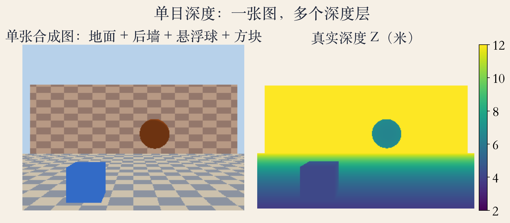
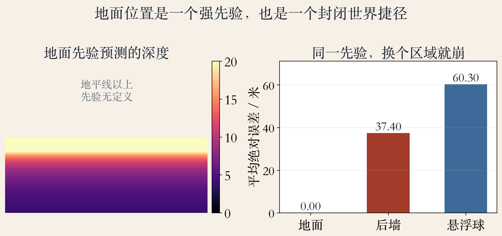
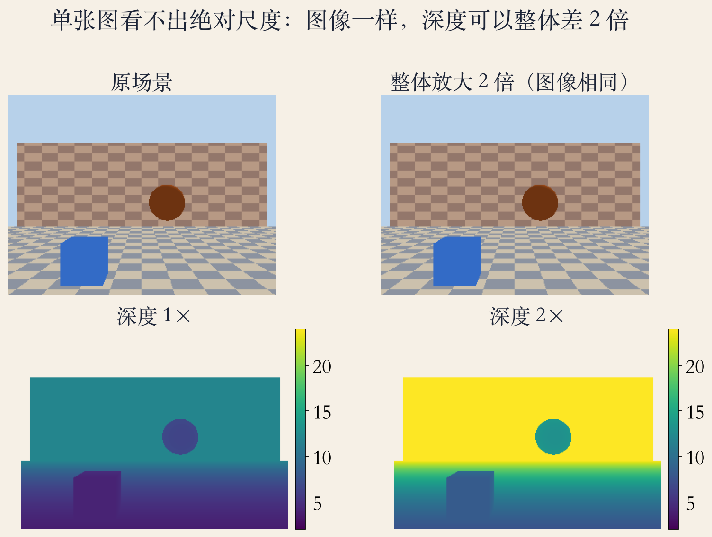

开篇 · 单张图
单张图能推断深度吗
单目深度没有视差，也没有主动测距。
一张图可以被很多个三维世界解释。
所以它给的是合理解释，不是测量值。
书上第 796 页列了三维化、柔焦、导航等用途。
依据：原书第 796 页
单目与双目
双目：有基线和视差
单目：只能靠线索和先验
问题本身解不唯一
正课第一百零七集
01 / 12
线索 · 三类
一张图里的三类深度线索
透视：地面越远，在图像里越靠上。
纹理梯度：同样的地砖，远处更密。
已知尺寸：知道球多大，就能反推距离。
三类线索都依赖假设，假设破了就出错。
依据：原书第 796 页
各自的假设
地面要平
纹理要规则
物体尺寸要已知
正课第一百零七集
02 / 12
2014 · 从手工到学习
多尺度融合：从数据学深度
书上第 797 页提到 2014 年的多尺度融合网络。
输入一张彩色图，直接回归整幅深度图。
训练数据主要是 NYU 室内和 KITTI 街道。
同页还列了 Make3D、Cityscapes、ScanNet。
依据：原书第 797 页
两个域
NYU：室内
KITTI：街道
两个域差别很大
正课第一百零七集
03 / 12
风险 · 封闭世界
封闭世界会学到捷径
在 NYU、KITTI 上训练和测试，分布很窄。
网络可能按像素在地面的位置猜深度。
也可能只对常见类别的物体弹出来。
换个相机高度或房间，捷径就失灵。
依据：原书第 797 页
捷径的代价
训练集里很灵
换场景就崩
高分不等于可靠
正课第一百零七集
04 / 12
实验一 · 合成房间
看图：地面先验
合成图里有地面、后墙、悬浮球和方块。
相机高 1.5 米，焦距 300 像素。
地面深度 Z = f·h / (y − cy)。
这个公式只看地面位置，不看物体。
依据：本集实验

合成单视图：地面、后墙、悬浮球、方块与真实深度｜程序生成，未用教材或论文原图
正课第一百零七集
05 / 12
实验二 · 同一先验
看图：地面准，离开就崩
地面平均误差 0.00 米。
后墙 37.4 米，悬浮球 60.3 米。
同一个先验，离开地面就不再成立。
这就是按地面位置猜深度的捷径。
依据：本集实验

地面先验误差：地面 0.00 米、后墙 37.4 米、悬浮球 60.3 米｜程序生成，未用教材或论文原图
正课第一百零七集
06 / 12
实验三 · 球半径
尺寸线索：知道多大才可用
已知球半径 0.5 米，就能用像素半径反推。
球面积 1455 像素，半径约 21.5 像素。
反推距离 6.97 米，真实中心 7.00 米。
真实尺寸未知时，仍然有歧义。
依据：本集实验
尺寸线索
需要已知半径
需要分割出轮廓
轮廓一糊就漂
正课第一百零七集
07 / 12
实验四 · 相对深度
尺度歧义：图像一样，深度差两倍
场景、相机高度、物体尺寸和距离都放大 2 倍。
两张图逐像素完全一样，最大差是 0。
深度图整体差 2 倍，相关仍是 1.000000。
单张图只能给相对深度，给不出绝对尺度。
依据：本集实验

原场景 vs 整体放大 2 倍：图像逐像素相同，深度整体 ×2｜程序生成，未用教材或论文原图
正课第一百零七集
08 / 12
走向泛化 · 光度与 MiDaS
光度一致性、MiDaS 与零样本
书上第 797 页提到左右图像的光度一致性。
也用视频相邻帧来训练深度。
书上第 798 页提到 MiDaS 联合多个数据集。
零样本评测要求训练集和测试集分开。
依据：原书第 797–798 页
MiDaS 的关键
多数据集联合
仿射不变损失对齐尺度
跨数据集评测
正课第一百零七集
09 / 12
Depth Anything · 数据规模
Depth Anything：数据与语义先验
论文第 1 页：约 6200 万张无标注图像。
论文第 2 页：150 万张有标注图像。
编码器用 DINOv2 初始化，继承语义先验。
教师模型打伪标签，再训练学生模型。
依据：Depth Anything 论文第 1–2 页
两件事
数据覆盖
语义先验
教师-学生自训练
正课第一百零七集
10 / 12
零样本 · 度量深度
零样本与度量深度别混
论文第 1 页：零样本在六个公开数据集上评估。
随机拍摄的照片也纳入零样本评估。
用 NYUv2 和 KITTI 度量深度微调后刷新 SOTA。
零样本给相对深度，微调后才接近米。
依据：Depth Anything 论文第 1 页
两条路线
零样本：相对深度
微调：度量深度
度量需要 LiDAR 或深度相机真值
正课第一百零七集
11 / 12
收束 · 先验的边界
收束：先验的边界
书上第 798 页：还能推断封闭三维形状。
单目深度是图像证据加先验的推断。
先验越强，越容易在封闭世界灵、开放世界崩。
工程上要问：相对还是度量，训练域是什么。
依据：原书第 798 页
下一集
深度相机硬件
直接测物理量
算法与硬件在应用汇合
正课第一百零七集
12 / 12